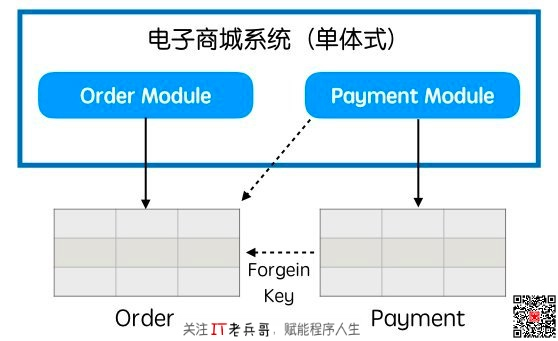
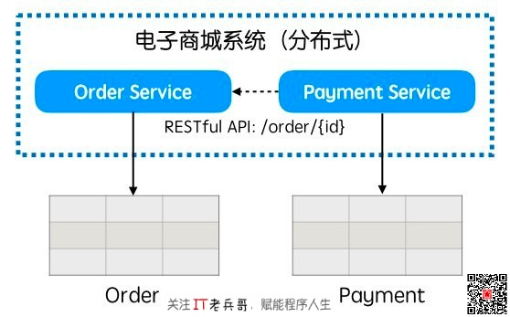
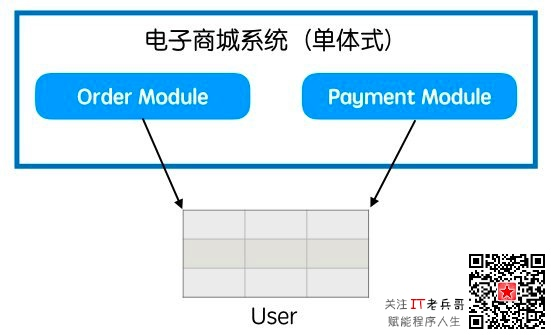
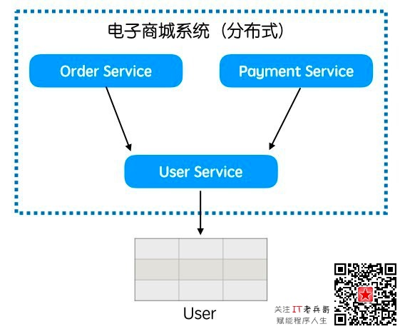
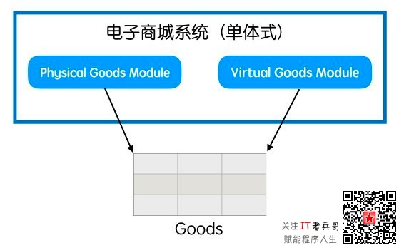
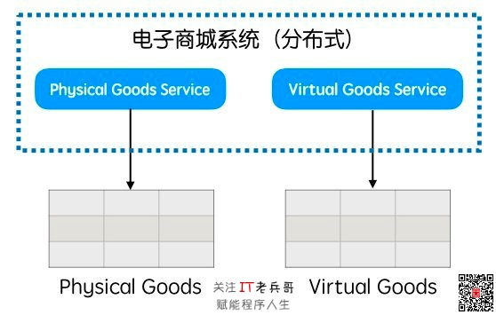
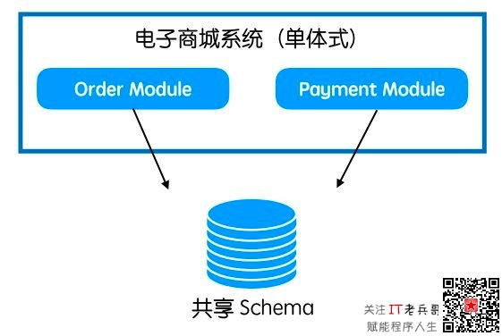
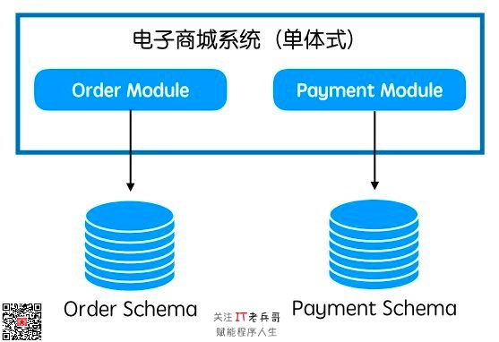
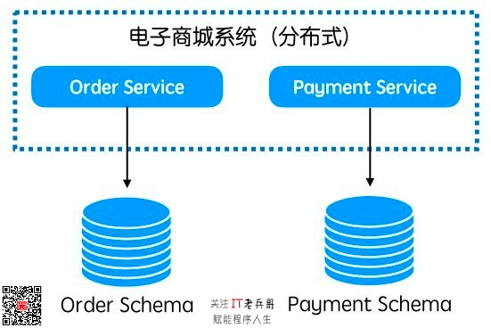

热评博文：《如何设计出优美的Web API？》，现阅读量超 2300，小伙伴们不要错过哦！
紧接昨天的上篇《如何把单体式应用拆解成微服务？【上】》，今天我们一起来看看具体的拆解场景：
如果单体式应用中两个功能模块存在数据引用关系，那我们在拆解微服务时如何消除这种外键引用关系呢？首先，停⽌外键引⽤；然后，改成通过RESTful HTTP API⽅式获取原先外键关联的信息。如下图，改造前Payment数据库表中的记录通过外键引用Order，代码层面通常会借助对象关系映射（ORM）框架建立数据对象的关联，改造后代码层面就不能通过ORM框架做关联了。在Payment数据库表的记录中会保存Order的主键值，除此之外还会保存Order的关键属性信息，这样可以避免频繁的跨进程调用，从而可以提高系统的整体效率表现。
下图是改造前的情况：

下图是改造后的情况：

如果单体式应用中两个功能模块彼此共享静态数据，那我们在拆解微服务时如何消除这种共享关系呢？静态数据通常存储在数据库当中，例如：商品类目代号。如果这些静态数据需要更新，那我们就需要频繁地发布系统，这样会导致多个服务的中断。
为了避免这个问题，我们也可以将这些静态数据拷贝多份，分别⽤于每个服务，但维护多份数据拷⻉的一致性是个问题。另外，我们也可以将这些静态数据存⼊每个服务的配置文件，降低更新数据的难度。统一配置中心，微服务架构中的必选组件，我们可以通过它来管理这些静态数据，这样在维护更新上会带来极大的便利。
如果单体式应用中两个功能模块共享某类基础数据，那我们在拆解微服务时如何消除这种共享关系呢？多个服务共享某类基础数据，例如：用户数据、物流公司数据等等，那我们要为这类数据提炼出专门的领域模型，将它封装成微服务，然后通过该服务来访问这些共享的基础数据。服务化带来的好处就是彼此之间仅仅依赖服务契约，双方具体采用什么技术和方案都是自由的。只要服务契约没有改变，那彼此的升级改造就不会影响。
下图是改造前的情况：

下图是改造后的情况：

如果单体式应用中两个功能模块共享一张数据表格，那我们在拆解微服务时如何消除这种共享关系呢？多个服务各自引⽤的数据被合并存储在一张数据库表当中，代码层面借助ORM框架实现多态，这种情况我们需要将每个服务所关注的数据剥离出来，分别存到不同的表格当中。
下图是改造前的情况：

下图是改造后的情况：

在拆解微服务过程中，我们该如何拆分数据库呢？最稳妥的方案就是分阶段重构数据库，数据是最宝贵的资源，我们不要贪图一步到位。
下图是改造前的情况：



从单体式应用中划分出有界的上下文，作为剥离微服务的候选，然后开始依次重构每个功能模块。那如何判断哪些模块应该优先被剥离成微服务呢？从模块剥离难度看，我们可以遵循先易后难的原则，逐步积累重构经验，这适用于在微服务构建方面经验不太丰富的团队；从需求变化频率看，优先剥离那些变更频繁的模块，整体收益会更大一些，这对于人力资源较为紧张的团队不失为一个好的判断准则；从资源消耗类型看，那些计算或内存密集的模块适合优先剥离，这样有利于弹性伸缩时提升资源利用效率，这对系统规模较大的场景效果最明显；从服务边界粒度看，粒度越粗越好剥离。具体按哪个规则来安排微服务的改造顺序，这就要根据每个团队的具体情况来具体分析了。
我们在支持不同系统实施微服务改造的过程中，上述优先级原则都被采用过，优先级存在的原因就是资源不够。微服务改造不是一蹴而就的事情，这个过程会持续很长时间，可能跨度几年，在不同阶段需要考虑的问题也就不同，最核心的原则就是按照适合自己的节奏有条不紊地开展工作，在确保线上业务稳定的前提下适当地追求速度。
那什么时候才算完成微服务改造呢？判断标准就是旧系统中全部有界上下文都被剥离成微服务，此时反腐层就可以被废除了；或者遗留的单体式应用相对较稳定，不再发生变化，重构的投入产出比不再划算；或者遗留的单体式应用关联业务已经退出市场了，系统下线了。
当单体式应用被拆解成多个微服务之后，原先在一个事务边界内的操作现在要跨多个事务边界了，我们如何保证事务的一致性呢？下面是一些分布式事务机制：
分布式事务机制本身不算太复杂，我们借鉴业界的一些开源产品自研了一套分布式事务框架，跟微服务框架结合起来，应用开发者只需要按照框架的约定实现特定的接口，通过一些注解就可以发起分布式事务，相关细节可以参考阿里的全局事务服务GTS。
当单体式应用被拆解成多个微服务之后，原先集中存储的数据也被分开存储了，报表生成将会遇到新的挑战。在单体式应⽤情况下，通常有一个用于生成报表的从库，从主库同步数据，仅⽤于查询等读操作，避免⽣成报表过程影响主库的读写效率。在微服务情况下，我们将要通过服务调用来获取数据，设计适合报表统计的批量接口，以及增加缓存用于提升数据获取效率。
微服务改造是一个长期过程，这个过程会遇到各式各样的问题，方法论可以帮助我们更好地解决这些问题，并且降低风险。欢迎大家一起探讨微服务改造过程中遇到的任何问题！
今天先分享到这里，如果你觉得有价值，麻烦动动手指点下文 「 推荐 」按钮，让更多小伙伴可以看到，我也会更加有动力坚持分享。另外，老兵哥我后续还会分享职业规划、应聘面试、技能提升、影响力打造等经验，欢迎 关注 本专栏或歪信公主号 「 IT老兵哥 」！
关注「 IT老兵哥 」，赋能程序人生！